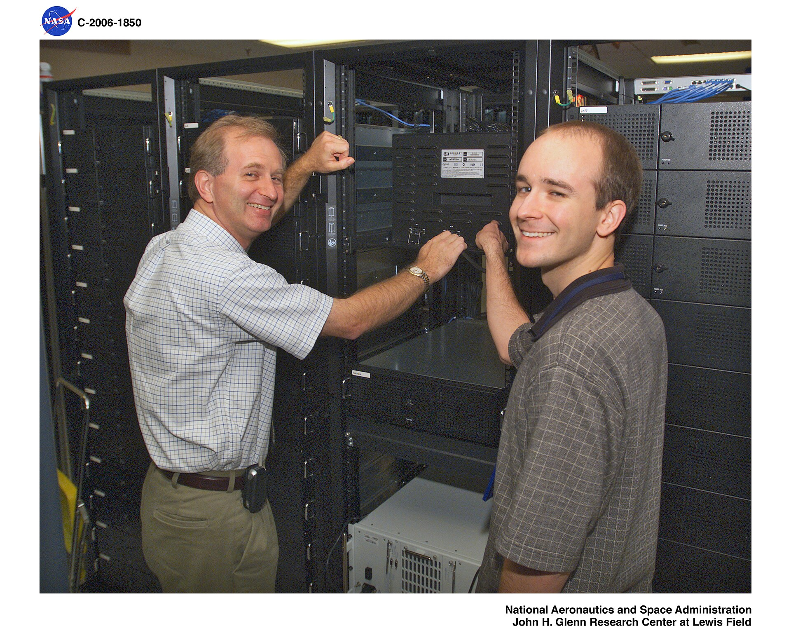

What Multi-Agent Orchestration Actually Costs You
A quiet post about "landing the plane" with Claude Code agents says more about production multi-agent systems than most of the threads that go viral.
That line undersells how common the failure mode is. The default instinct when a task feels big is to fan it out — spin up a planner, a handful of workers, a reviewer — and let them go. What actually happens is redundant sub-agents re-deriving the same context, recursive delegation with no depth cap, and a token bill that has nothing to do with the value delivered.
We hit the same wall building the multi-agent layer at Databackfill, where GPT-4o and Claude 3.5 agents handle autonomous audience segmentation and tool execution for 50,000+ B2B users. The fix wasn't a smarter model, it was scoping: each agent gets a narrow role and a hard budget, shared state moves through LangGraph checkpoints instead of being re-explained in every prompt, and a router picks the cheapest model that can still hit the accuracy bar for a given step. That's most of where a 30% cut in monthly LLM spend actually came from — not fewer agents, fewer wasted turns between them.
The practical takeaway: before adding another agent to a flow, ask what shared state it needs and whether it can read that state instead of asking another agent to summarize it. Most "multi-agent" cost problems are context-passing problems wearing an orchestration costume.